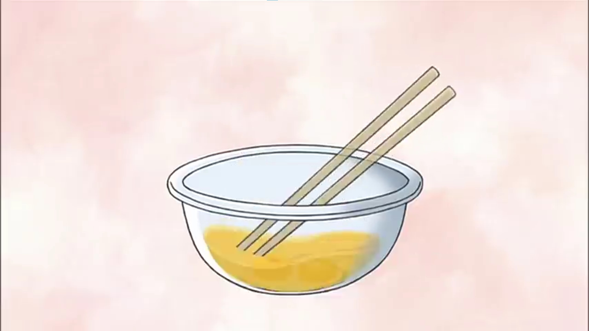
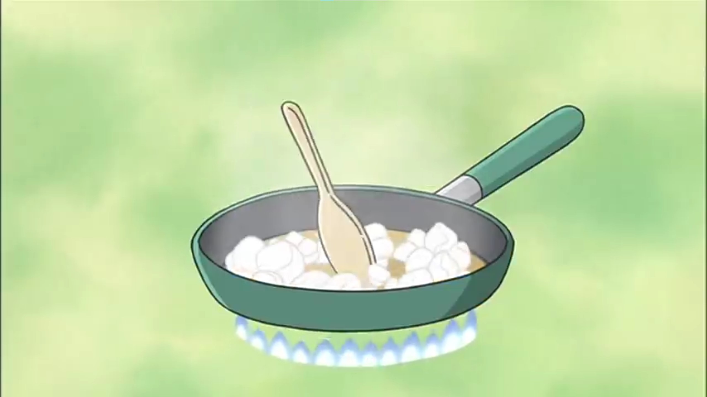
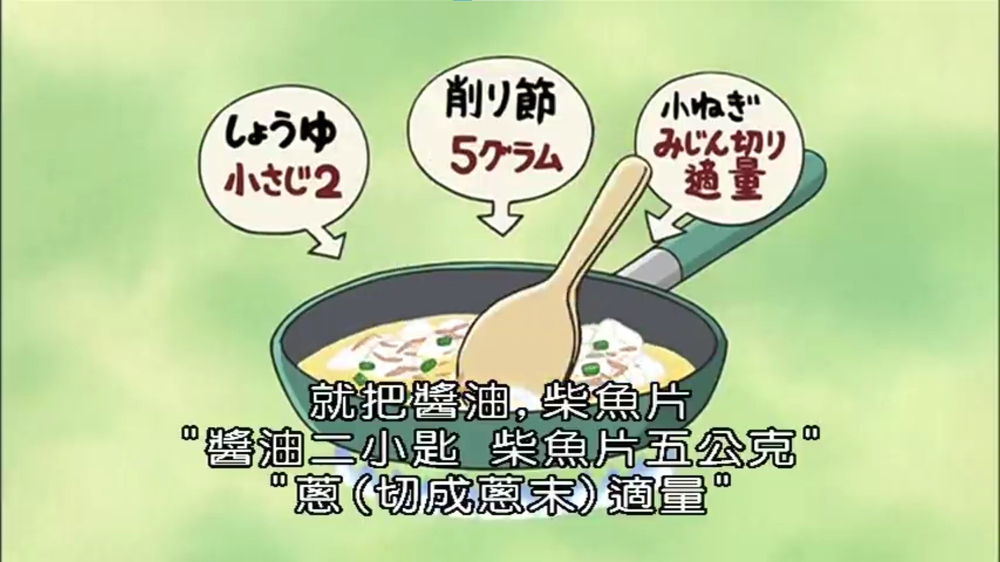
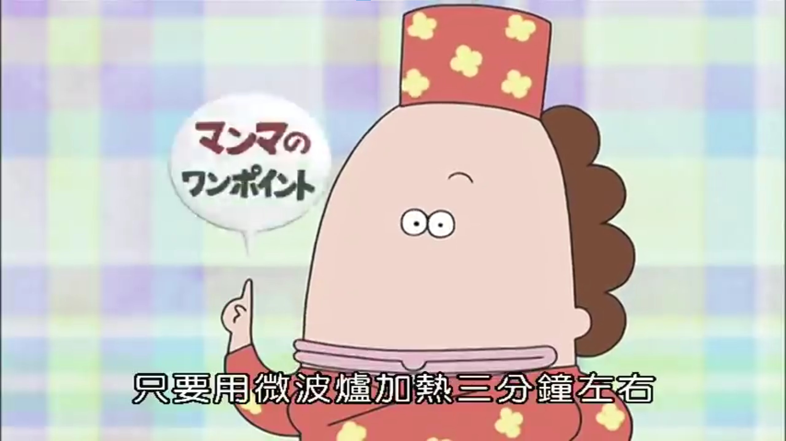

所需材料 (Ingredients)
- 材料總共四人份
- 雞蛋二個、嫩豆腐一塊
- 柴魚片五公克、芝麻油一大匙
- 醬油二小匙、鹽巴一小匙半、蔥(切成蔥末)適量
製作步驟 (Steps)
- 首先將雞蛋打到碗裡面去然後加入鹽巴攪拌均勻。 
- 接著把芝麻油倒進炒菜鍋裡面預熱。
- 然後就是Do Re Mi So
- 把瀝乾水分的嫩豆腐加進來。
- 接著呢，一邊把豆腐稍微弄碎一點，炒到沒有水分為止 
- 如果沒有炒乾一點的話，裝盤以後就會看起來水水的
- 接下來呢，把剛剛攪拌好的蛋汁倒進來
- 等到雞蛋開始有點硬的時候，就把醬油、柴魚片還有切碎的蔥末一起放進來 
- 輕輕的拌炒等到雞蛋變得鬆軟，而且也熟的時候就完成了這是一道又快又簡單又健康的料理哦
烹飪小技巧
💡 豆腐只要用微波爐加熱三分鐘左右，就可以很快的吸乾水份哦
